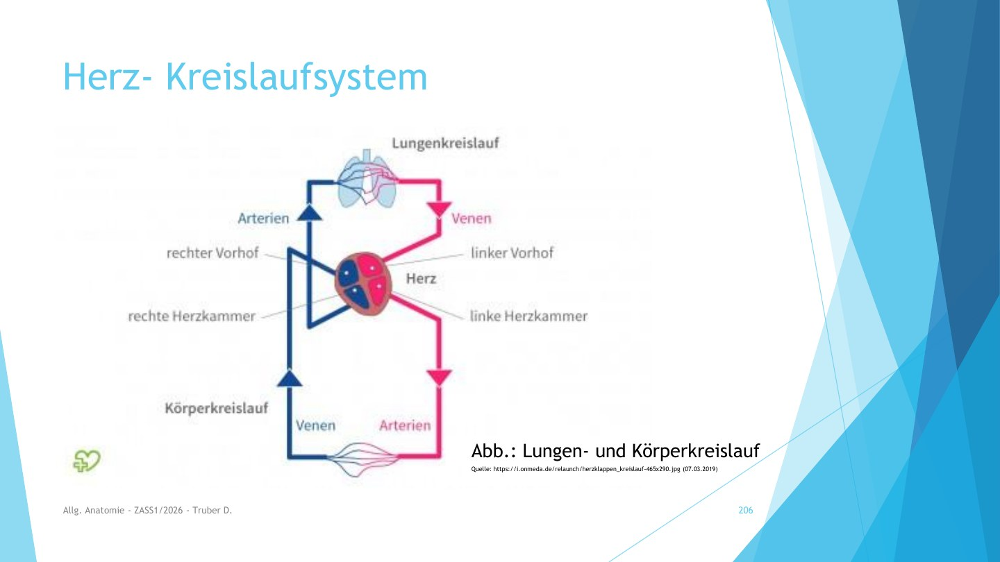

HERZ · LUNGE · KÖRPER
Kreislauf entdecken
Blutkreislauf
Kreislauf wird geladen …

3D ist auf diesem Gerät nicht verfügbar. Alle Lerntexte und Übungen sind weiterhin nutzbar.
SauerstoffreichSauerstoffarm
Schematische Vorderansicht. Die rechte Herzhälfte liegt links im Bild. Blau steht für wenig Sauerstoff; Blut ist nie blau.
STATION IM KREISLAUF
Ein wichtiger Unterschied
Arterien führen Blut vom Herzen weg. Venen bringen es zum Herzen zurück.
Deshalb führen die Lungenarterien sauerstoffarmes Blut und die Lungenvenen sauerstoffreiches Blut.
MIT DEM BLUT DURCH DEN KÖRPER
Ein ganzer Umlauf.
Von der linken Herzkammer bis zurück zum Herzen.